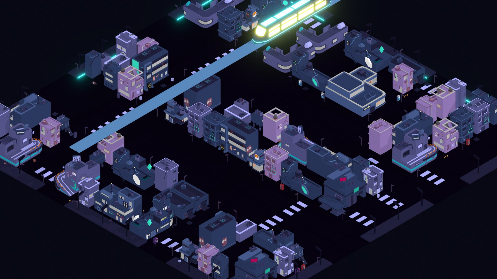
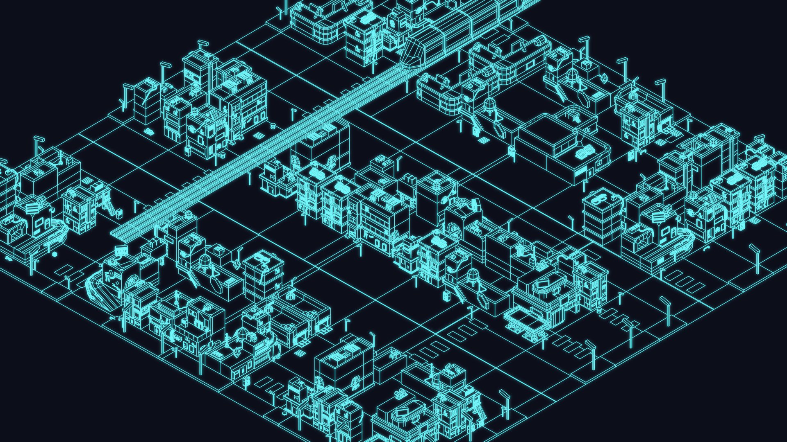
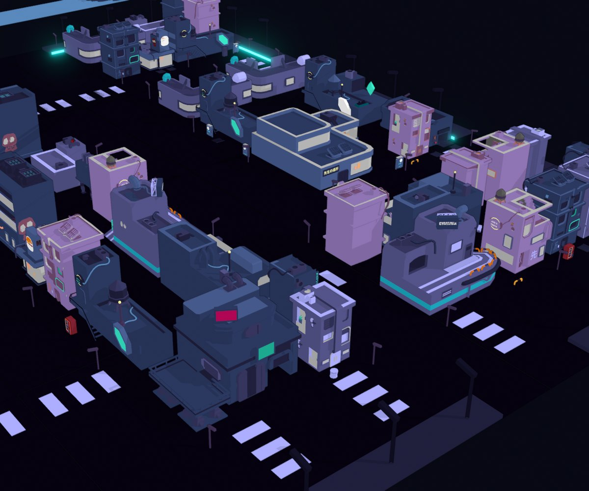
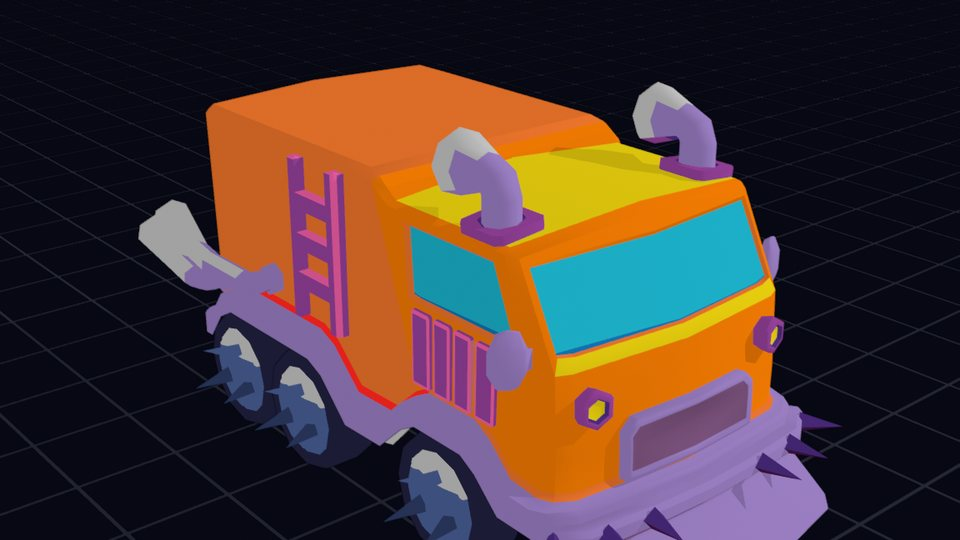
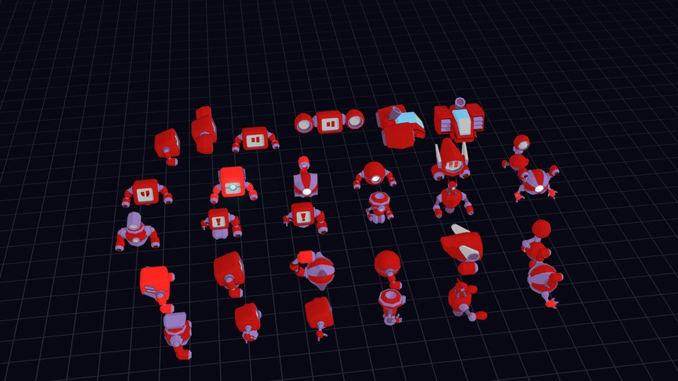
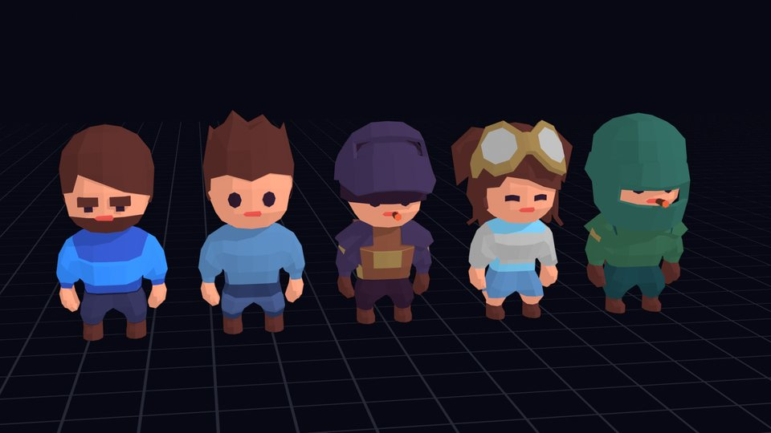

Low poly citiesthat run on a phone.
Unity asset packs by Anras. Drag across the city to see how few triangles it takes.
One material for the whole city.
Every building, street, vehicle, robot and character in Neon City shares a single material. Fewer materials means fewer draw calls and less memory, which is what mobile GPUs care about most.
- Largest building
- 4,423 triangles
- Most props
- Under 200 triangles
- Typical building
- 1,000 to 3,400 triangles
- Materials
- 1, shared by every model
- Scale
- 1 unit = 1 meter
- Pivots
- Bottom center
- Prefabs
- Zeroed transforms, colliders on static meshes
- Render pipeline
- URP
- Demo scene
- Included

In production for the Unity Asset Store
Neon City
A modular night city for top-down, isometric and third-person games. Snap the streets together, drop in buildings and props, and the single shared material keeps everything consistent.
- Modular buildings, streets and a monorail
- An armored truck with gunner turret slots
- Robots and rigged characters with animations
- 19 buildings, each with a destroyed twin, plus rubble and debris
- Prefabs, colliders and a URP demo scene



Made by people who ship mobile games.
We've been making mobile games for years. Every Anras pack comes out of that production work and is cleaned up so it drops straight into your project.
Questions, bug reports or a custom request
anrasofficial@gmail.com
Replies within two business days.